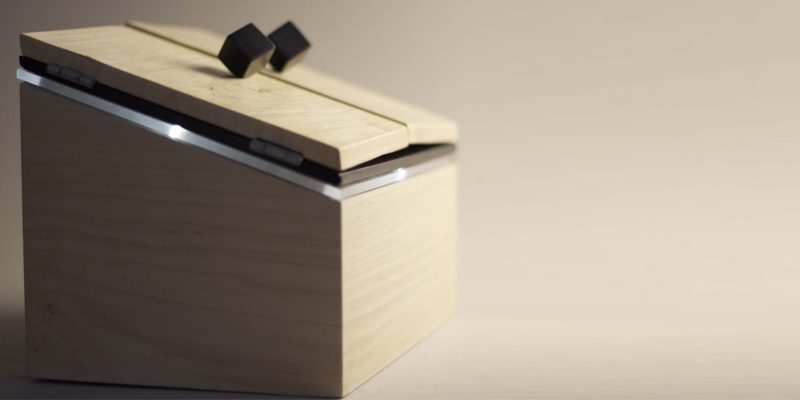

Message in a Box displays one of four personal messages intended to prompt further communication at a more convenient time.
Wanting to impart an aspect of cherishability to the quick and easy process of SMS texting, I have combined traditional woodworking craft with the latest technology to create a user centred product that strengthens the line of communication between two people. When a text message is sent to the box, a glow emanates from within indicating a message has been received. Once the doors are opened, one of the four pre-defined messages lights up brightly and clearly.
A bespoke piece, the user friendly interface becomes engaging yet intimate due to the hand-written messages which glow from within.